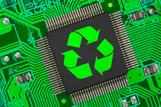
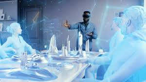

Artificial Intelligence Takes Center Stage
AI is no longer a futuristic concept—it’s embedded in our daily lives. From AI-powered chatbots to personalized shopping experiences, the technology is transforming industries. In 2024, we’re seeing advancements in generative AI, which enables machines to create content, write code, and even design art. Businesses are leveraging these tools for productivity and creativity, making AI a cornerstone of innovation.

The Rise of Quantum Computing
Quantum computing is moving from theoretical potential to practical applications. In industries such as pharmaceuticals, finance, and logistics, companies are using quantum algorithms to solve problems previously deemed unsolvable. While it’s still in its early stages, this field promises to redefine computing power in ways we’re only beginning to grasp.

The Push Toward Sustainability
As climate change takes center stage, the tech industry is under pressure to go green. From energy-efficient data centers to biodegradable electronics, sustainable technology is gaining momentum. Companies are prioritizing eco-friendly designs, and advancements in battery technology are fueling the transition to renewable energy sources.

Metaverse: From Hype to Reality
While the metaverse was a buzzword in recent years, 2024 is about creating meaningful applications. Virtual reality (VR) and augmented reality (AR) technologies are finding practical uses in education, healthcare, and remote work. Businesses are investing in metaverse platforms to enhance customer engagement and streamline operations.

Cybersecurity Becomes Mission-Critical
As technology evolves, so do the threats. With increasing reliance on digital platforms, cybersecurity is a top priority. Advanced threat detection systems, powered by AI, are helping organizations protect sensitive data. Personal cybersecurity tools are also becoming more accessible, empowering individuals to safeguard their digital lives.
The technology trends of 2024 showcase how innovation can solve pressing global challenges while creating new opportunities. Whether through AI, quantum computing, or sustainable tech, these advancements promise a future that is smarter, greener, and more interconnected.